Embracing Threads
Barona, Municipality 6 at Milan
Start Point
"Our solutions aims to create a much needed space for local communion in the project area, serving to be a space for acceptance, congregation, and finding common ground through expression and shared experience."
Area analysis
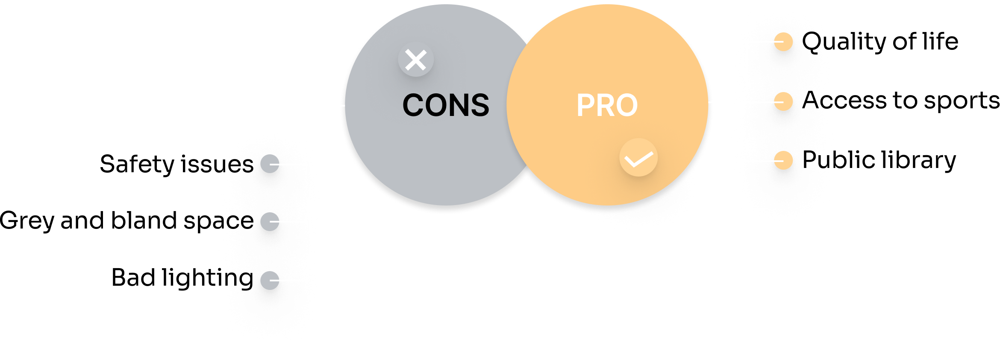
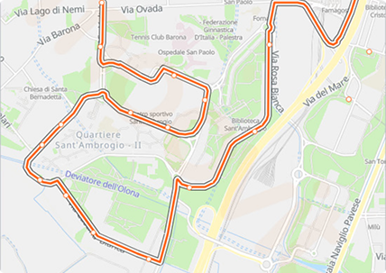
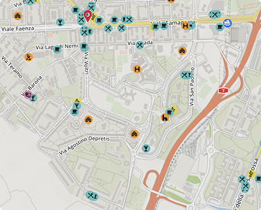
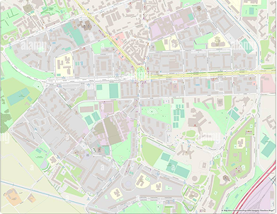
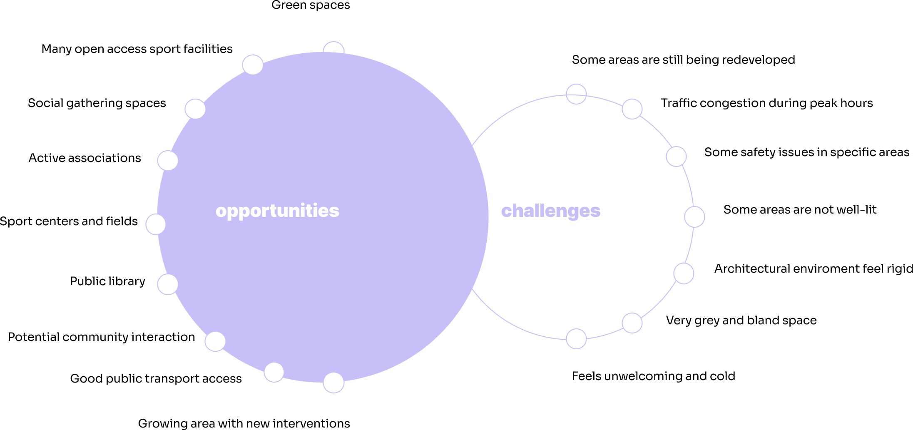
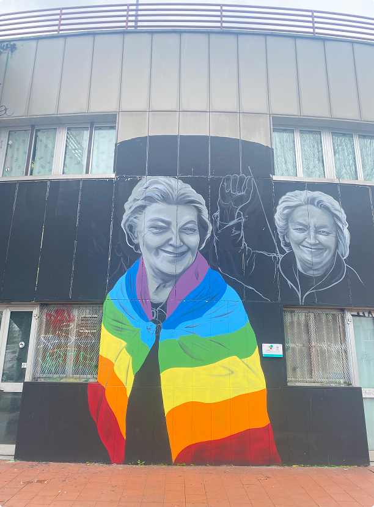
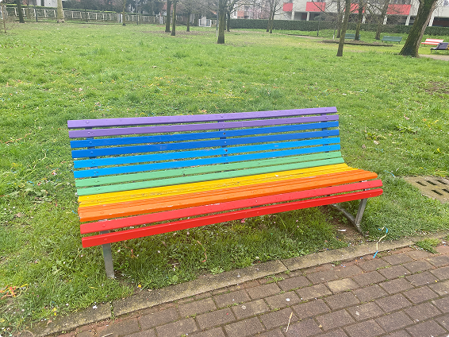
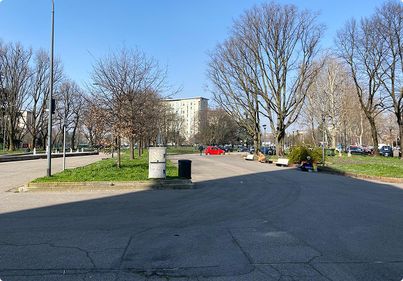
Finding the queer elements of the area.
LGBTQ+ in Barona:
- Some traditional and conservative views persist
- LGBTQ+ visibility is gradually increasing
- Although there are not LGBTQ+ specific venues, the neighbourhood is generally open and tolerant.
Events and groups:
- Meetings and awareness activities at the Civic Center in Via San Paolino.
Social spaces:
- Inclusive bars and restaurants.
- Public library
- Sports facilities
Closeby areas of interest in Barona:
- Community garden, dog parks, playgrounds, tower
- Lack of light in some areas
- A lot of gray buildings
- Few rainbow benches
- Areas full of colourful graffiti
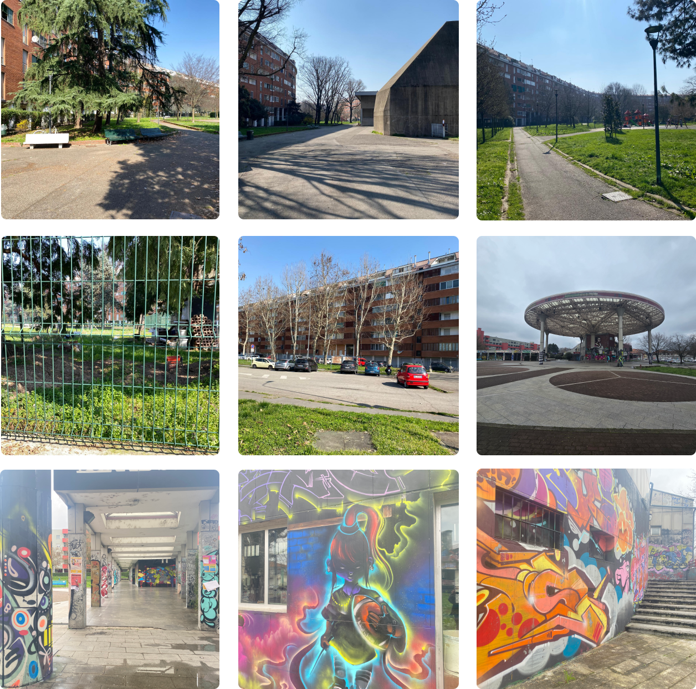
The center serves as a welcoming space, fostering cultural and social engagement.
Poster locations:
- Inside and outside the library
- At the cafe in the civic building
Results:
- No responses from local inhabitants.
Conclusion:
- This approach does not fit the target audience and the information from our questionnaire should be attained elsewhere.
Response:
- Consult a person of authority in the project area who can inform us about the space.
Interview outcomes
Versatile spaces
Available for conferences, meetings, and cultural activities.
Spaces for early childhood (0-6)
Include storytelling, games, and interactive learning.
Spaces for children and teens (7-17)
Available for reading, studying, workshops, and creative activities.
Social & cultural activities
Workshops, training courses, thematic meetings.
Community's usage of the civic space
Various community involvement
Sizes of local communities
Historical perspective of the area
prevalence of local audiences
Connection (and disconnection) to the rest of Barona
Existing infrastructures for care and queer involvement
Co-design
Our co-design session is an interactive, reflective workshop featuring two creative activities to inspire imagination and open dialogue. Every contribution —big or small— helps envision inclusive, queer-friendly transformations of public space.
Connection threads
Create a space/place that allows gathering input from citizens
Spaces for expression
Activities / Exhibitions / Performances that tell the story of Queerness and why it matters even for non-Queer people
Add more light or create a light installation
Create a more welcoming space with the use of colors
Public, accessible, and plural seating options
Installations and exhibition space
Art and queer representation
Space for activity and collaboration
New and innovative use of space and function
Connection between spaces, both inside and outside
Personas
Concept
Sending a message
Our goal for the project is to gently bridge the gap between the public and LGBTQIA+ community by creating an inclusive space that encourages understanding and dialogue. We seek to design an environment that invites the community to interact naturally, without pressure, fostering empathy and mutual respect.
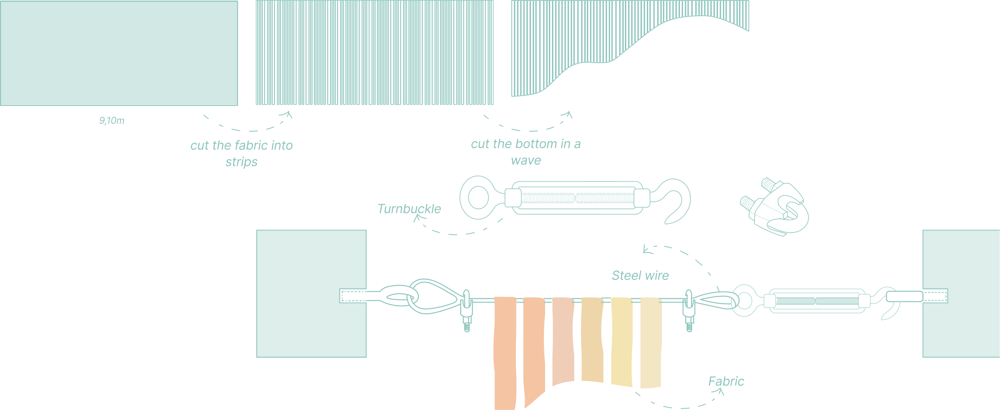
4.05m
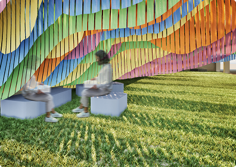
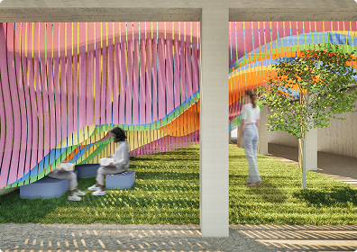
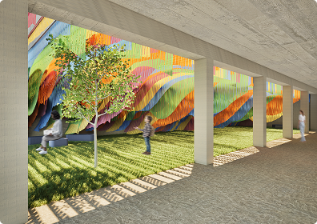
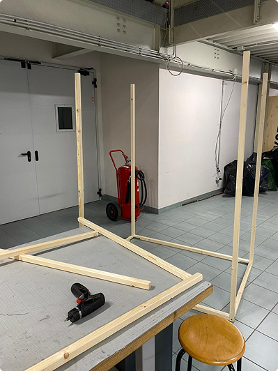
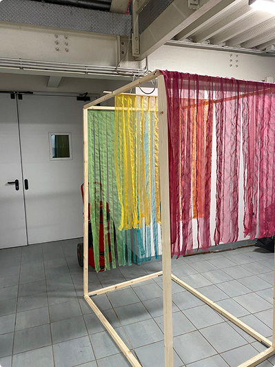
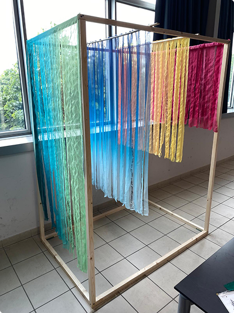
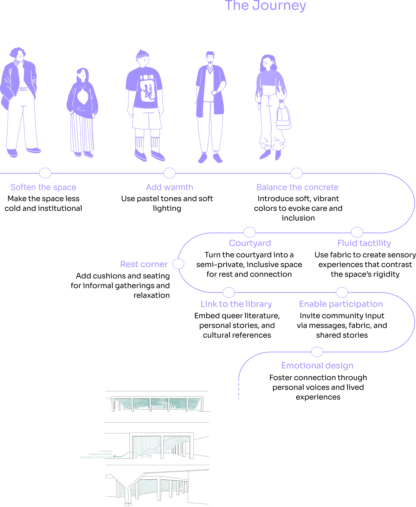

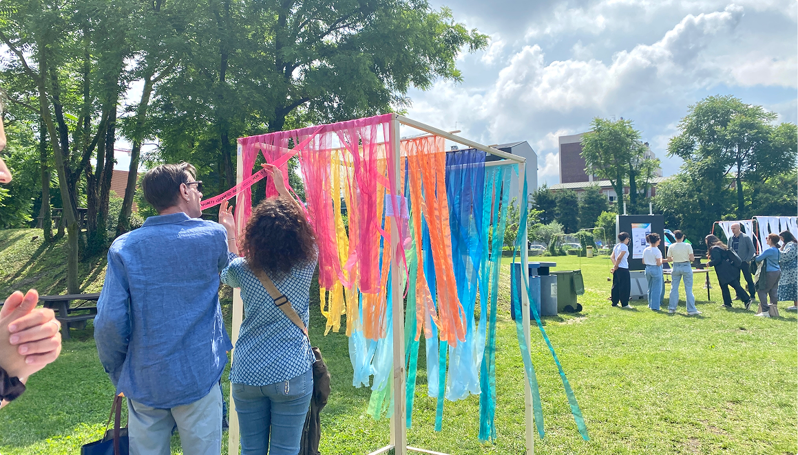
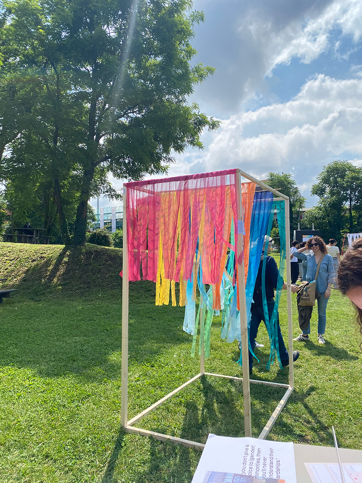